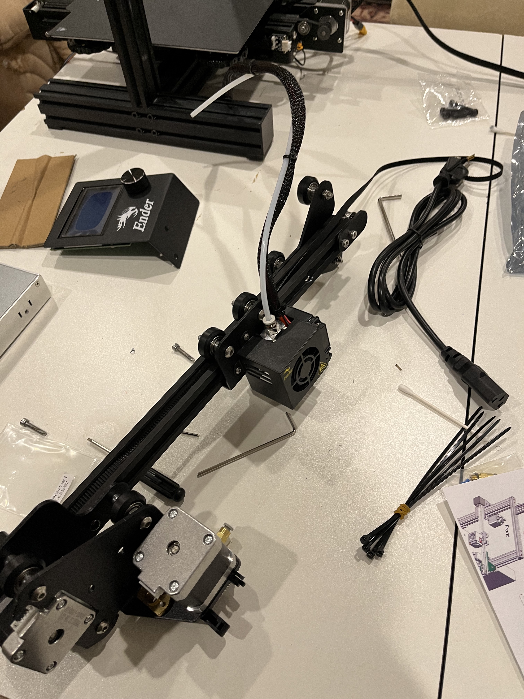
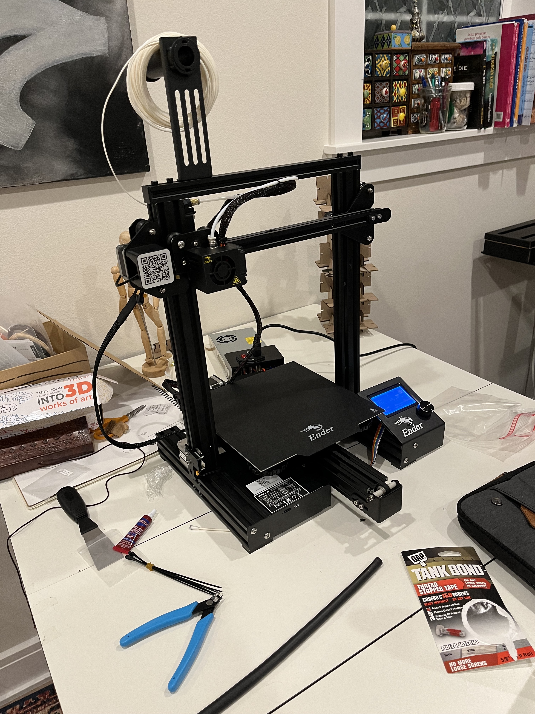

A3: Printingg!
Here's the 3D printer I bought! It took me days to set it up
 
Here's the test I did to make sure my bed was leveled.

Here are the cubes I created in Rhino, from left to right: low which took 10 minutes, standard 27 minutes , super 50 minutes, and the concentric top and bottom layer cube 50 minutes.

Time prints and measurements

Here are the tubes and cylinders I made plus the Nested object. From left to right: single extrusion wall thickness tube, double extrusion wall thickness and random z-seam alignment, cylinder 0.1 tolerance, cylinder with 0.001 tolerance, cylinder with spiralize outer contour, cylinder with supports.

Time prints and measurements